품질경영기사 (2021-05-15 기출문제)
1과목: 실험계획법
1. 23 형 요인실험에서 수준의 조와 데이터는 다음과 같을 때, 요인 A의 주효과는?
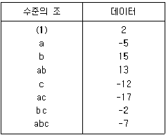
- -19/16
- -19/4
- -1/16
- 5/16
(정답률: 72%)
2. 난괴법의 조건이 아닌 것은?
- 오차항은 N(μ, σe2)을 따른다.
- 만일 A요인이 모수요인이라면
 이다.
이다. - 만일 B요인이 변량요인이라면 N(0, σB2)을 따른다.
- 하나는 모수요인이고, 다른 하나는 변량요인이다.
(정답률: 66%)

3. 모수요인 A는 4수준, 모수요인 B는 3수준인 반복이 없는 2 요인 실험에서 SA=2.22, SB=3.44, ST=6.22 일 때, Se는 얼마인가?
- 0.56
- 2.78
- 4.00
- 5.66
(정답률: 76%)
4. L16(215) 형 직교배열표를 사용할 때, A요인을 기본표시 ab에 B요인을 기본표시 bcd 에 배치하였다. A×B는 어떤 기본표시를 가진 열에 배치시켜야 하는가?
- ad
- cd
- acd
- abcd
(정답률: 76%)
5. 어떤 부품에 대해 다수의 로트(lot)에서 랜덤하게 3로트(A1, A2, A3)를 골라 각 로트에서 또한 랜덤하게 5개씩을 임의 추출하여 치수를 측정했을 때의 설명으로 틀린 것은?
- ai들의 합은 0이다.
- 로트는 변량요인이다.
- ai는 랜덤으로 변하는 확률변수이다.
- 수준이 기술적인 의미를 갖지 못한다.
(정답률: 68%)
6. 다음 표와 같이 1요인 실험 계수치 데이터를 얻었다. 적합품을 0, 부적합품을 1로 하여 분산분석한 결과 오차의 제곱합(Se)은 60.4를 얻었다. 기계 A2에서의 모부적합품에 대한 95%신뢰구간을 구하면 약 얼마인가?
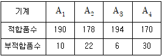
- 0.11 ± 0.0195
- 0.11 ± 0.0382
- 0.11 ± 0.0422
- 0.11 ± 0.⑤65
(정답률: 60%)
7. A, B, C모두 모수요인이고, 반복 없는 3요인 실험에서 교호작용 A×B, A×C, BXC가 모두 오차항에 풀링한 후 인자들을 검토한 결과 A, B만 유의하고, C요인은 무시할 수 있을 때,
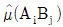
값과 ne값은?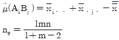
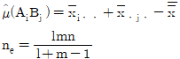
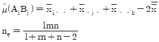
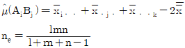
(정답률: 63%)
8. 반복수가 같은 1요인 실험에서 오차항의 자유도는 35, 총자유도는 41 일 경우, 수준수 및 반복수는 각각 얼마인가?
- 수준수: 6, 반복수: 7
- 수준수: 6, 반복수: 8
- 수준수: 7, 반복수: 6
- 수준수: 8, 반복수: 6
(정답률: 72%)
9. 4 요인(factor) A, B, C, D에 관한 24 형 요인실험의 일부실시(fractional replication)에서 정의대비(defining contrast)를 I=ABCD 로 하였을 때 별명관계(alias relation)로 맞는 것은?
- A=BCD
- B=ABD
- C=ACD
- D=ABD
(정답률: 72%)
10. L27(313) 형 직교배열표에서 만일 취하는 요인의 수가 10이면, 오차에 대한 자유도는? (단, 교호작용을 무시할 경우이다.)
- 2
- 3
- 6
- 13
(정답률: 67%)
11. kxk 라틴방격에서의 가능한 배열방법의 수를 계산하는 식은?
- k! x (k-1)!
- (표준방격의 수) x k! x k!
- (표준방격의 수) × k! x (k-1)!
- (표준방격의 수) x (k-1)! x (k-1)!
(정답률: 70%)
12. 교락법의 실험을 여러 번 반복하여도 어떤 반복에서나 동일한 요인효과가 블록효과와 교락되어 있는 경우의 교락실험 설계방법은?
- 부분교락
- 단독교락
- 이중교락
- 완전교락
(정답률: 71%)
13. 로트 간 또는 로트 내의 산포, 기계간의 산포, 작업자간의 산포, 측정의 산포 등 여러 가지 샘플링 및 측정의 정도를 추정하여 샘플링 방식을 설계하거나 측정방법을 검토하기 위한 변량요인들에 대한 실험설계 방법으로 가장 적합한 것은?
- 교락법
- 라틴방격법
- 요인배치법
- 지분실험법
(정답률: 69%)
14. 제품의 품질특성치가 잡음(noise)에 의한 영향을 받지 않거나 덜 받게 하기 위하여 다구찌 방법을 적용하고자 할 때, 가장 효과적인 단계는?
- 제조단계
- 생산단계
- 설계단계
- 시장조사단계
(정답률: 75%)
15. 실험계획법의 순서가 맞는 것은?
- 특성치의 선택 → 실험목적의 설정 → 요인과 요인수준의 선택 → 실험의 배치
- 특성치의 선택 → 실험목적의 설정 → 실험의 배치 → 요인과 요인수준의 선택
- 실험목적의 설정 → 요인과 요인수준의 선택 → 특성치의 선택 → 실험의 배치
- 실험목적의 설정 → 특성치의 선택 → 요인과 요인수준의 선택 → 실험의 배치
(정답률: 59%)
16. 4종류의 제품 관계에서 유도한 선형식(L)이 다음과 같았다. A1=9, A2=41, A3=26, A4=38일 때, 이 선형식이 대비라면 L에 대한 제곱합 SL은 얼마인가?
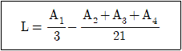
- 10.5
- 11.0
- 12.6
- 15.2
(정답률: 43%)
17. 2요인 실험에서 A, B 모두 모수요인인 경우 교호작용의 평균제곱의 기대치(E(VA×B))로 맞는 것은? (단, A는 5수준, B는 6수준, 반복 2회의 실험이다.)
- σ2e+σ2A×B
- σ2e+2σ2A×B
- σ2e+20σ2A×B
- σ2e+2×4×5σ2A×B
(정답률: 73%)
18. 4수준의 1차 요인 A와 2수준의 2차 요인 B, 블록반복 2회의 실험을 1차 단위가 1 요인 실험인 단일 분할법에 의하여 행하였다. 1차 요인 오차의 자유도는 얼마인가? (단, A, B는 모두 모수요이다.)
- 3
- 6
- 7
- 8
(정답률: 67%)
19. 다음의 분산분석표를 보고 내린 결론으로 틀린 것은?
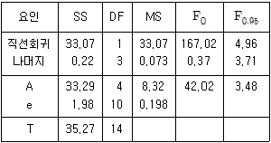
- 요인 A의 효과는 유의하다.
- 총 제곱합 중 회귀직선에 의해 설명되는 부분은 약 94%정도이다.
- 단순회귀로써 x와 y 간의 관계를 충분히 설명할 수 있다고 할 수 있다.
- 고차회귀에 의해 설명될 수 있는 제곱합의 양은 총 제곱합에서 직선회귀에 의한 제곱합을 뺀 값이다.
(정답률: 64%)
20. 요인의 수준 l=4, 반복수 m=3으로 동일한 1 요인 실험에서 총제곱합(ST)은 2.383, 요인 A의 제곱합(SA)은 2.011 이었다. μ(Ai) 와 μ(Ai')의 평균치 차를 α=0.⑤로 검정하고 싶다. 평균치 차의 절대값이 약 얼마보다 클 때 유의하다고 할 수 있는가? (단, t0.95(8)=1.860, t0.975(8)=2.306 이다.)
- 0.284
- 0.352
- 0.327
- 0.406
(정답률: 32%)
2과목: 통계적품질관리
21. 정규 모집단으로부터 n=15의 랜덤샘플을 취하여
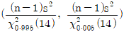
에 의거, 신뢰구간 (0.0691, 0.531)을 얻었을 때의 설명으로 맞는 것은?- 모집단의 99%가 이 구간 안에 포함된다.
- 모평균이 이 구간 안에 포함될 신뢰율이 99%이다.
- 모분산이 이 구간 안에 포함될 신뢰율이 99%이다.
- 모표준편차가 이 구간 안에 포함될 신뢰율이 99%이다.
(정답률: 66%)
22. N(65, 12)을 따르는 품질 특성치를 위해 3σ 의 관리한계를 갖는 개별치(X) 관리도를 작성하여 공정을 모니터링하고 있다. 어떤 이상요인으로 인해 품질특성치의 분포가 N(67, 12)으로 변화되었을 때, 관리도의 타점이 X관리도의 관리한계를 벗어날 확률은 약 얼마인가? (단, Z가 표준정규변수일 때, P(Z≤1)=0.8413, P(Z≤1.5)=0.9332, P(Z≤2)=0.9772이며, 관리하한을 벗어나는 경우의 확률은 무시하고 계산한다.)
- 0.0668
- 0.1587
- 0.1815
- 0.2255
(정답률: 46%)
23. F분포표로 부터 F0.95(1, 8)=5.32 를 알고 있을 때, t0.975(8)의 값은 약 얼마인가?
- 1.960
- 2.306
- 2.330
- 알수 없다.
(정답률: 62%)
24. 모부적합품률에 대한 검정을 할 때, 검정통계량으로 맞는 것은?
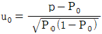
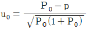
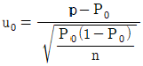
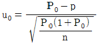
(정답률: 67%)
25. 다음의 그림에 대한 설명으로 맞는 것은? (단, μm : 측정치 분포의 평균치, σm : 측정치 분포의 표준편차, x : 실제 측정값, μ : 참값이다.)
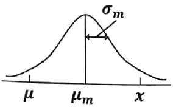
- 정밀도는 좋고, 치우침과 오차는 작다.
- 정밀도는 좋고, 치우침과 오차는 크다.
- 정밀도는 좋고, 치우침은 작고, 오차는 크다.
- 정밀도는 좋고, 치우침은 크고, 오차는 작다.
(정답률: 38%)
26. 임의의 두 사상 A, B가 독립사상이 되기 위한 조건은?
- P(A∩B)=P(A)⋅P(B)
- P(A∪B)=P(A)⋅P(B)
- P(A∩B)=P(A)+P(B)
- P(A∣B)=P(A∩B)/P(A)
(정답률: 71%)
27. 계수형 샘플링검사 절차-제1부: 로트별 합격품질한계(AQL) 지표형 샘플링검사 방식(KS Q ISO 2859-1)의 보통검사에서 수월한 검사로의 전환규칙으로 틀린 것은?
- 생산의 안정
- 연속 5로트가 합격
- 소관권한자의 승인
- 전환점수의 현재 값이 30이상
(정답률: 58%)
28. 검정이론에 대한 설명으로 틀린 것은?
- 제1종 오류란 귀무가설이 참일 때, 귀무가설을 기각하는 오류이다.
- 제2종 오류란 대립가설이 참일 때, 귀무가설을 채택하는 오류이다.
- 유의수준이란 귀무가설이 참일 때, 귀무가설을 채택하는 확률이다.
- 검출력이란 대립가설이 참일 때, 귀무가설을 기각하는 확률이다.
(정답률: 49%)
29. 두 집단의 모평균 차의 구간추정에 있어서 σ12, σ22를 알고 있고, σ12=σ22=σ2, n1=n2=n 일 때
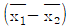
의 표준편차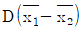
는?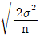
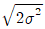
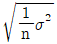
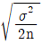
(정답률: 61%)
30. ∑c=80, k=20일 때 c관리도(count control chart)의 관리 하한(lower control limit)은?
- -3
- 2
- 10
- 고려하지 않는다.
(정답률: 52%)
31. 관리도를 이용하여 제조공정을 통계적으로 관리하기 위한 기준값이 주어져 있는 경우의 관리도에 대한 설명으로 틀린 것은?
- 이상원인의 존재는 가급적 검출할 수 있어야 한다.
- 우연원인의 존재는 가급적 검출할 수 없어야 한다.
- 변경점이 발생되어 기준값이 변할 경우 관리한계를 적절히 교정하여야 한다.
- 기준값이 주어져 있는 관리도는 공정성능지수(Process Performance Index)를 측정할 수 없다.
(정답률: 62%)
32. 계수형 축차 샘플링검사 방식(KS Q ISO 28591 : 2017)에서 QCR 이 뜻하는 내용으로 맞는 것은?
- 합격시키고 싶은 로트의 부적합품률의 하한
- 합격시키고 싶은 로트의 부적합품률의 상한
- 불합격시키고 싶은 로트의 부적합품률의 하한
- 불합격시키고 싶은 로트의 부적합품률의 상한
(정답률: 51%)
33. 표본평균(
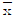
)의 표준오차를 원래 값의 1/8로 줄이기 위해서는 표본의 크기를 원래보다 몇 배 늘려야 하는가?- 8배
- 16배
- 64배
- 256배
(정답률: 73%)
34. OC 곡선에 대한 설명으로 틀린 것은? (단, N은 로트의 크기, n 은 시료의 크기, Ac는 합격판정개수이다.)
- OC곡선은 일반적으로 계수형 샘플링검사에 한하여 적용할 수 있다.
- N과 n을 일정하게 하고, Ac를 증가시키면 OC 곡선은 오른쪽으로 완만해 진다.
- N/n ≥ 10 일 때, n, Ac가 일정하고, N이 변할 경우 OC 곡선은 크게 변하지 않는다.
- OC 곡선은 로트의 부적합품률이 주어질 때 그 로트가 합격될 확률을 그래프로 나타낸 것이다.
(정답률: 44%)
35. 샘플링(sampling)검사와 전수검사를 비교한 설명으로 틀린 것은?
- 파괴검사에서는 물품을 보증하는데 샘플링검사 이외는 생각할 수 없다.
- 검사비용을 적게 하고 싶을 때는 샘플링검사가 일반적으로 유리하다.
- 검사가 손쉽고 검사비용에 비해 얻어지는 효과가 클 때는 전수검사가 필요하다.
- 품질향상에 대하여 생산자에게 자극을 주려면 개개의 물품을 전수검사하는 편이 좋다.
(정답률: 63%)
36. 100 개의 표본에서 구한 데이터로부터 두 변수의 상관계수를 구하니 0.8이었다. 모상관계수가 0이 아니라면, 모상관계수와 기준치와의 상이검정을 위하여 z 변환하면, z 의 값은 약 얼마인가? (단, 두 변수 x, y는 모두 정규분포에 따른다.)
- -1.099
- -0.8
- 0.8
- 1.099
(정답률: 42%)
37. 샘플의 크기가 5인
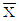
-R관리도가 안정상태로 관리되고 있다. 관리도를 작성한 전체 데이터로 히스토그램을 작성하여 계산한 표준편차(σH)가 19.5 이고, 군내산포(σw)가 13.67 이었다면 군간산포(σb)는 약 얼마인가?- 13.9
- 16.6
- 18.5
- 19.2
(정답률: 39%)
38. 어느 지역 유치원은 남자가 여자보다 1.5배 많다고 알려져 있다. 이 주장을 검정하기 위하여 해당 지역의 유치원을 임의로 방문하여 조사하였더니 남자, 여자의 수가 각각 120 명, 100 명이었다. 적합도 검정을 할 때, 검정통계량은 약 얼마인가?
- 2.64
- 2.73
- 2.84
- 3.11
(정답률: 48%)
39. 측정대상이 되는 생산로트나 배치 (batch)로부터 1개의 측정치 밖에 얻을 수 없거나 측정에 많은 시간과 비용이 소요되는 경우에 이동범위를 병용해서 사용하는 관리도는?
- X-Rm 관리도
 -R 관리도
-R 관리도- X-
 -R 관리도
-R 관리도 - CUSUM 관리도
(정답률: 60%)
40. 그림은 로트의 평균치를 보증하는 계량규준형 1회 샘플링 검사를 설계하는 과정을 나타낸 것이다. 특성치가 망대특성일 경우 다음 설명 중 틀린 것은?
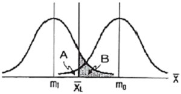
- A는 생산자 위험을 나타낸다.
- B는 소비자 위험을 나타낸다.
- 평균값이 m0 인 로트는 좋은 로트로 받아들일 수 있다.
- 시료로부터 얻어진 데이터의 평균이
 보다 작으면 해당 로트는 합격이다.
보다 작으면 해당 로트는 합격이다.
(정답률: 64%)
3과목: 생산시스템
41. 생산의 경제성을 높이기 위해 예방보전, 사후보전, 개량보전, 보전예방 활동을 의미하는 것은?
- 수리보전
- 사전보전
- 예비보전
- 생산보전
(정답률: 64%)
42. 총괄생산계획(APP) 기법 중 선형결정기법(LDR)에서 사용되는 근사 비용함수에 포함되지 않는 비용은?
- 잔업비용
- 설비투자비용
- 고용 및 해고 비용
- 재고비용⋅재고부족비용⋅생산준비비용
(정답률: 47%)
43. ABC 분석에서 부분적으로 영향을 미치는 구성요소들로서 공식적인 보전관리보다는 가장 간소한 관리를 수행하는 그룹은?
- A 그룹
- B 그룹
- C 그룹
- A, B, C 그룹
(정답률: 65%)
44. 정상적인 페이스와 관측대상 작업의 페이스를 비교 판단하고 관측 시간치를 수정하기 위하여 하는 활동은?
- 샘플링
- 레이팅
- 사이클
- 오퍼레이팅
(정답률: 69%)
45. ERP 시스템의 구축 시 자체개발의 경우 장⋅단점에 관한 설명으로 틀린 것은?
- 개발기간이 장기화 된다.
- 사용자의 요구사항을 충실히 반영한다.
- 비정형화된 예외업무의 수용이 용이하다.
- Best Practice 의 수용으로 효율적 업무개선이 이루어진다.
(정답률: 39%)
46. JIT 생산방식에서 간판의 운영규칙이 아닌 것은?
- 생산을 평준화한다.
- 후공정에서 가져간 만큼 생산한다.
- 부적합품을 다음 공정에 보내지 않는다.
- 자재흐름은 전공정에서 후공정으로 밀어내는 방식이다.
(정답률: 66%)
47. PERT 기법에서 낙관적 시간을 a, 정상시간을 m, 비관적 시간을 b로 주어졌을 때, 기대시간의 평균(te)과 분산(σ2)을 구하는 식으로 맞는 것은?
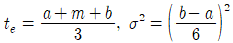
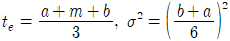
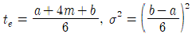
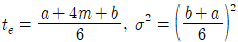
(정답률: 64%)
48. 유사한 생산흐름을 갖는 제품들을 그룹화하여 생산효율을 증대시키려고 하는 설비의 배치방식은?
- GT 배치
- 공정별 배치
- 라인 배치
- 프로젝트 배치
(정답률: 67%)
49. 단일 기계에서 대기 중인 4개의 작업을 처리하고자 한다. 최소납기일 규칙에 의해 작업순서를 결정할 경우 4개 작업의 평균처리시간은?
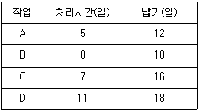
- 14일
- 18일
- 31일
- 72일
(정답률: 49%)
50. 다음은 작은 컵을 손으로 잡고 병에 씌우는 서블릭 동작분석의 일부이다. ( ) 안에 들어갈 서블릭 기호가 바르게 나열된 것은?
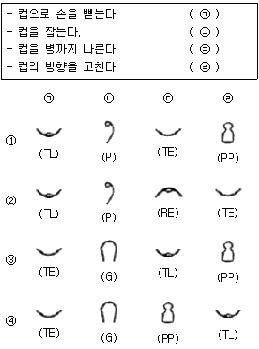
- ①
- ②
- ③
- ④
(정답률: 70%)
51. MRP 시스템의 입력정보가 아닌 것은?
- 자재명세서
- 발주계획보고서
- 재고기록철
- 주생산일정계획
(정답률: 43%)
52. 보전비를 감소하기 위한 조치로 가장 거리가 먼 것은?
- 보전담당자의 교육훈련
- 외주업자의 적절한 이용
- 보전작업의 계획적 시행
- 설비 사용자의 사후보전 교육
(정답률: 51%)
53. 자동차 부품공장에서 가동률 개선을 위한 워크샘플링 결과, 150회 관측횟수 중 비가동이 35회였다. 비가동률 추정에는 상대오차가 사용되고 허용되는 오차가 10%인 경우, 비가동률 추정치의 절대오차 허용값은?
- 2.3%
- 7.7%
- 23.3%
- 76.7%
(정답률: 36%)
54. 조사비, 수송비, 입고비, 통관비 둥 구매 및 조달에 수반되어 발생하는 비용은?
- 발주비용
- 재고부족비
- 생산준비비
- 재고유지비
(정답률: 62%)
55. 표준화된 선택 사양을 미리 확보하고 고객의 요구에 따라서 이들을 조합하여 공급하는 생산전략은?
- 스피드경영전략
- 세계화전략
- 대량고객화전략
- 품질경영전략
(정답률: 52%)
56. 정성적인 수요예측방법으로 전문가들을 대상으로 질의-응답의 피드백 과정을 개별적으로 수차례 반복하여 예측하는 기법은?
- 델파이법
- 자료유추법
- 시계열분석법
- 시장조사법
(정답률: 66%)
57. 포드 시스템에서 대량생산의 일반원칙에 해당하지 않는 것은?
- 제품의 단순화
- 부품의 표준화
- 성과급 차별화
- 작업의 단순화
(정답률: 71%)
58. 어떤 제품 1 로트를 생산하는데 필요한 작업 A, B, C, D, E의 소요시간이 각각 20초, 25초, 10초, 15초, 22초이다. 이때 균형손실(balance loss)은 몇 %인가?
- 26.4
- 35.9
- 64.1
- 73.6
(정답률: 28%)
59. 누적예측오차(Cumulative sum of Forecast Errors)를 절대평균편차(Mean Absolute Deviation)로 나눈 것은?
- SC(평활상수)
- TS(추적지표)
- MSE(평균제곱오차)
- CMA(평균중심이동)
(정답률: 50%)
60. A 제품의 판매가격이 개당 300 원, 한계이익률(또는 공헌이익률)은 50%, 고정비는 1000 만원이다. 500 만원의 이익을 올리기 위하여 필요한 A제품의 판매수량은?
- 5만개
- 6만개
- 8만개
- 10만개
(정답률: 61%)
4과목: 신뢰성관리
61. 시스템의 신뢰도에 관한 설명으로 틀린 것은?
- 모든 시스템은 직렬 또는 병렬연결로 표현이 가능하다.
- 시스템 신뢰도는 직렬 또는 병렬로 표현되지 않는 경우도 구할 수 있다.
- 모든 부품이 직렬로 연결된 것으로 보고 신뢰도를 구하면 실제시스템 신뢰도의 하한이 된다.
- 모든 부품이 병렬로 연결된 것으로 보고 신뢰도를 구하면 실제시스템 신뢰도의 상한이 된다.
(정답률: 36%)
62. 그림과 같은 FT도에서 정상사상(Top Event)의 고장확률은 약 얼마인가? (단, 기본사상 a, b, c의 고장확률은 각각 0.2, 0.3, 0.4 이다.)
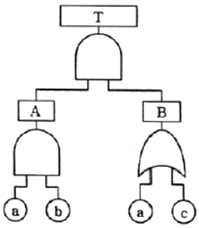
- 0.0312
- 0.0600
- 0.4400
- 0.4848
(정답률: 39%)
63. MTBF 가 102 시간인 기계의 불신뢰도를 10%로 하기 위한 사용시간은 약 얼마인가?
- 1.⑤ 시간
- 10.5 시간
- 1⑤ 시간
- 1⑤0 시간
(정답률: 47%)
64. 계량 1회 샘플링 검사(DOD-HDBK H108)에서 샘플수와 총시험시간이 주어지고, 총시험시간까지 시험하여 발생한 고장개수가 합격판정개수보다 적을 경우 로트를 합격하는 시험방법은?
- 현지시험
- 정수중단시험
- 강제열화시험
- 정시중단시험
(정답률: 68%)
65. 정시중단시험에서 평균수명의 100(1-α)% 한쪽 신뢰구간 추정 시 하한으로 맞는 것은? (단,
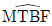
는 평균수명의 점추정치, r 은 고장개수이다.)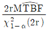
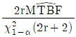
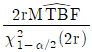
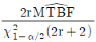
(정답률: 38%)
66. Y 제품에 수명시험 결과 얻은 데이터를 와이블 확률지를 사용하여 모수를 추정하였더니 형상모수 m=1.0, 척도모수 η=3500시간, 위치모수 r=0이 되었다. 이 제품의 MTBF 는 얼마인가? (단, Γ(1.5)=0.88623, Γ(2)=1.00000, Γ(2.5)=1.32934 이다.)
- 22⑤ 시간
- 3102 시간
- 3500 시간
- 4653 시간
(정답률: 57%)
67. 초기고장기간의 고장률을 감소시키기 위한 대책으로 맞는 것은?
- 부품에 대한 예방보전을 실시한다.
- 부품의 수입검사를 전수검사로 한다.
- 부품에 대한 번인(burn-in)시험을 한다.
- 부품의 수입검사를 선별형 샘플링검사로 한다.
(정답률: 64%)
68. 용어 - 신인성 및 서비스 품질(KS A 3004: 2002)에서 정의한 용어 중 시험 또는 운용 결과를 해석하거나 신뢰성 척도를 계산하는데 포함되어야 하는 고장은?
- 오용(misuse) 고장
- 돌발(sudden) 고장
- 연관(relevant) 고장
- 파국(cataleptic) 고장
(정답률: 61%)
69. 샘플 5개를 50 시간 가속수명시험을 하였고, 고장이 1 개도 발생하지 않았다. 신뢰수준 95%에서 평균수명의 하한값은 약 얼마인가? (단, χ0.952(2)=5.99 이다.)
- 84 시간
- 126 시간
- 168 시간
- 252 시간
(정답률: 33%)
70. Y 부품에 가해지는 부하(stress)는 평균 3000kg/mm2, 표준편차 300kg/mm2 이며, 강도는 평균 4000kg/mm2, 표준편차 400 kg/mm2인 정규분포를 따른다. 부품의 신뢰도는 약 얼마인가? (단, u0.90 = 1.282, u0.95 = 1.645, u0.9772 = 2, u0.9987 = 3이다.)
- 90.00%
- 95.46%
- 97.72%
- 99.87%
(정답률: 62%)
71. 평균고장률 λ, 평균수리율 μ인 지수분포를 따를 경우 평균수리시간(MTTR)을 맞게 표현한 것은?
- 1/μ
- μ/(λ+μ)
- λ/(λ+μ)
- 1-e-μt
(정답률: 47%)
72. 정시중단시험에서 고장개수가 0개인 경우 어떠한 분포를 이용하여 평균수명을 구하는가?
- 정규분포
- 초기하분포
- 이항분포
- 푸아송분포
(정답률: 58%)
73. 수명 데이터를 분석하기 위해서는 먼저 그 데이터가 가정된 분포에 적합한지를 검정하여야 한다. 이 경우 적용되는 기법이 아닌 것은?
- χ2 검정
- Pareto 검정
- Bartlett 검정
- Kolmogorov-Smirnov 검정
(정답률: 58%)
74. 고장평점법에서 고장평점을 산정하는데 사용되는 인자에 대한 설명이 틀린 것은?
- C1 : 기능적 고장의 영향의 중요도
- C2 : 영향을 미치는 시스템의 범위
- C3 : 고장발생 빈도
- C5 : 기존 설계의 정확도
(정답률: 52%)
75. 2개의 동일한 부품으로 이루어진 대기 리던던시에서 t=50에서의 신뢰도는 약 얼마인가? (단, 부품의 고장률은 0.02 로 일정하고, 지수분포를 따른다.)
- 0.3679
- 0.6313
- 0.7358
- 0.8106
(정답률: 31%)
76. 신뢰도 함수 R(t) 가 고장율 λ인 지수분포를 따르고 보전도 함수 M(t)=1-e-μt 일 때 가용도(Availability)는?
- μ/(λ+μ)
- λ/(λ+μ)
- λμ/(λ+μ)
- (λ+μ)/λμ
(정답률: 60%)
77. 샘플 50개에 대하여 수명시험을 하고, 10시간 간격으로 고장개수를 조사한 결과가 표와 같을 때 t=30시간에서의 누적고장확률은 얼마인가?
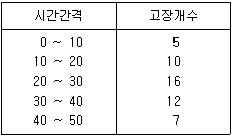
- 0.060
- 0.062
- 0.620
- 0.680
(정답률: 36%)
78. 3개의 부품이 모두 작동해야만 장치가 작동되는 경우, 장치의 신뢰도를 0.95 이상이 되게 하려면 각 부품의 신뢰도는 최소한 얼마 이상이 되어야 하는가? (단, 사용된 3개 부품의 신뢰도는 동일하다.)
- 약 0.953
- 약 0.963
- 약 0.973
- 약 0.983
(정답률: 57%)
79. 수명분포가 평균이 100, 표준편차가 5인 정규분포를 따르는 제품을 이미 1⑤ 시간 사용하였다. 그렇다면 앞으로 5시간 이상 더 작동할 신뢰도는 약 얼마인가? (단, u 가 표준정규분포를 따르는 확률변수라면 P(u≥1)=0.1587, P(u≥2)=0.0228 이다.)
- 0.0228
- 0.1437
- 0.1587
- 0.1815
(정답률: 39%)
80. 1000 시간당 평균고장률이 0.3으로 일정한 부품 3개를 병렬결합으로 설계한다면, 이 기기의 평균수명은 약 몇 시간인가?
- 1111
- 3333
- 6111
- 9999
(정답률: 51%)
5과목: 품질경영
81. 품질전략을 수립 할 때 계획단계(전략의 형성단계)에서 SWOT 분석을 많이 활용하고 있다. 여기서 'W' 는 무엇인가?
- 약점
- 위협
- 강점
- 성장기회
(정답률: 65%)
82. 제조공정에 관한 사내표준의 요건이 아닌 것은?
- 필요시 신속하게 개정, 향상시킬 것
- 직관적으로 보기 쉬운 표현을 할 것
- 기록내용은 구체적이고 객관적일 것
- 미래에 추진해야할 사항을 포함할 것
(정답률: 65%)
83. 히스토그램의 작성을 통해 확인할 수 없는 사항은?
- 품질특성의 분포 상태 확인
- 품질의 시간적 변화상태 파악
- 품질특성의 중심 및 산포크기
- 공정의 해석 및 공정능력 파악
(정답률: 40%)
84. 잡음에 둔감한 강건 설계의 실현을 위해 다구찌가 제안한 3단계 절차 중 이상적인 조건하에서 고객의 요구를 충족시키는 제품원형을 설계하는 단계를 무엇이라 하는가?
- 시스템 설계
- 파라미터 설계
- 허용차 설계
- 반응표면 설계
(정답률: 29%)
85. 허즈버그가 제시한 위생요인과 동기유발요인 중 위생요인에 해당하지 않는 것은?
- 작업조건
- 대인관계
- 책임의 증대
- 조직의 정책과 방침
(정답률: 39%)
86. 신 QC 수법 중 문제가 되고 있는 사상 가운데서 대응되는 요소를 찾아내어 이것을 행과 열로 배치하고, 그 교점에 각 요소간의 연관유무나 관련정도를 표시함으로써 이원적인 배치에서 문제의 소재나 문제의 형태를 탐색하는 수법은?
- PDPC법
- 연관도법
- 계통도법
- 매트릭스도법
(정답률: 51%)
87. 기업에서 제안활동이 종업원의 참여의식을 높일 수 있는 유효한 방법임은 분명하지만 활성화되지 않는 경우가 있는데, 그 이유가 아닌 것은?
- 최고경영자의 지원과 관심이 부족함
- 종업원 개인들 간의 업무수행능력 차이
- 심사지연이나 비합리적인 평가제도를 운영함
- 교육이나 홍보의 미비로 인한 종업원의 관심부족
(정답률: 53%)
88. 3개의 부품을 조립하려고 한다. 각각의 부품의 허용차가 ±0.03, ±0.02, ±0.⑤일 때 조립품의 허용차는 약 얼마인가?
- ±0.0019
- ±0.0038
- ±0.0062
- ±0.0616
(정답률: 51%)
89. 규정된 요구사항이 충족되었음을 객관적 증거의 제시를 통하여 확인하는 것에 대한 용어는?
- 검토(review)
- 검사(inspection)
- 검증(verification)
- 모니터링(monitoring)
(정답률: 61%)
90. 크로스비(P.B.Crosby)의 품질경영에 대한 사상이 아닌 것은?
- 수행표준은 무결점이다.
- 품질의 척도는 품질코스트이다.
- 품질은 주어진 용도에 대한 적합성으로 정의한다.
- 고객의 요구사항을 해결하기 위해 공급자가 갖추어야 되는 품질시스템은 처음부터 올바르게 일을 행하는 것이다.
(정답률: 43%)
91. 계량기(측정기) 관리체계의 정비 목적으로 적절하지 않는 것은?
- 검사및 측정업무의 효율화
- 품질 등 관리업무의 효율화
- 제품의 품질 및 안전성의 유지 향상
- 측정 프로세스에 대한 고객의 이해 및 관심의 고양
(정답률: 64%)
92. 표준의 서식과 작성방법 (KS A 0001)에서 규정하고 있는 표준의 요소에 관한 설명으로 틀린 것은?
- "참고(reference)"는 규정의 일부는 아니다.
- "해설(explanation)"은 표준의 일부는 아니다.
- "본문(text)"은 조항의 구성 부분의 주체가 되는 문장이다.
- "보기(example)"는 본문, 그림, 표 안에 직접 넣으면 복잡하게 되므로 따로 기재하는 것이다.
(정답률: 54%)
93. 어떤 표준의 일부를 구성하기 위하여 다른 표준에 제정되어 있는 사항을 중복하여 기재하지 않고 그 표준의 표준번호만을 표시해 두는 표준을 무엇이라 하는가?
- 인용(引用)표준
- 관련(關聯)표준
- 정합(整合)표준
- 번역(飜譯)표준
(정답률: 52%)
94. (주)한국의 주력상품인 A 형 동파이프의 규격은 상한 0.900, 하한 0.500이고, 실제 제조공정에서 생산된 제품의 평균은 0.738 이며, 표준편차는 0.0725 로 확인되었을 때, 최소공정능력지수(Cpk)는 약 얼마인가?
- 0.19
- 0.74
- 0.92
- 1.09
(정답률: 33%)
95. 품질비용 중 상품개발을 위한 소비자 반응 조사비용과 부품 품질의 향상을 위해 협력업체를 지도할 때 소요되는 컨설팅 비용을 순서대로 올바르게 나열한 것은?
- 예방비용 - 예방비용
- 예방비용 - 평가비용
- 평가비용 - 평가비용
- 평가비용 - 예방비용
(정답률: 40%)
96. 평가비용에 포함되지 않는 것은?
- 공정검사 비용
- 출하검사 비용
- 품질관리교육 비용
- 계측기 검⋅교정 비용
(정답률: 56%)
97. 표준수 - 표준수 수열(KS A ISO 3)에서 기본수열 표시에 해당하지 않는 것은?
- R 5
- R 10(1.25...)
- R 20/4(112...)
- R 40(75...300)
(정답률: 43%)
98. 엄격책임은 비합리적으로 위험한 제품의 사용으로 인해 어느 누구든 상해를 입게 되면 그 제품의 제조자는 책임을 진다. 이 때 제품자체에 초점을 맞추며, 제조자의 엄격책임을 증명하기 위해서 피해자가 입증해야 할 사항은?
- 제품이 보증된 대로 작동하지 않고 사용 중 상해를 일으킨다.
- 세조사는 제품의 제조에 있어서 합리적 주의 업무를 실행하지 않았다.
- 제품에 신뢰할 수 없는 결함이 있었고, 그 결함이 원인이 되어 피해가 발생했다.
- 제품의 생산, 검사 그리고 안전 가이드라인에 대한 사내표준을 무시하지 않는다.
(정답률: 49%)
99. 품질보증의 주요 기능으로서 최고경영자가 직접 관여하여 가장 먼저 실행해야 할 내용은?
- 품질보증의 확보
- 품질방침의 설정과 전개
- 품질정보의 수집 해석 활용
- 품질보증시스템의 구축과 운영
(정답률: 46%)
100. 6시그마 혁신활동에서는 실제 공정품질 산포가 여러 가지 원인(재료, 방법, 장치, 사람, 환경, 측정 등)에 의하여 이론적 중심평균이 얼마까지 흔들림을 허용하는가?
- ±1.0σ
- ±1.5σ
- ±2.0σ
- ±3.0σ
(정답률: 41%)
오차항은 모든 실험 조건에서 동일하게 분포한다는 가정하에 N(μ, σe2)을 따른다. 이는 난괴법의 핵심 가정 중 하나이다.
만일 A요인이 모수요인이라면
만일 B요인이 변량요인이라면 N(0, σB2)을 따른다. 이는 B요인이 변화할 때마다 분산이 변한다는 것을 의미한다.
따라서, "하나는 모수요인이고, 다른 하나는 변량요인이다."는 난괴법의 조건과는 무관한 내용이므로 정답이 아니다.